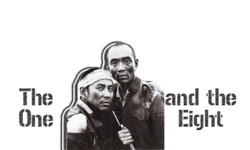
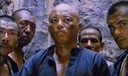
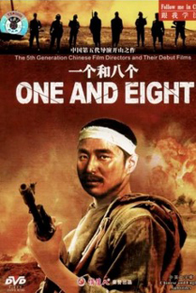
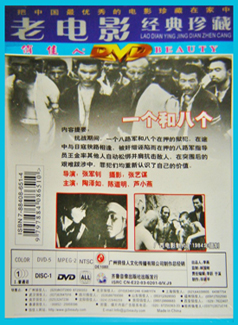

One and Eight is a landmark Chinese film from 1983. The film tells the story of eight criminals and a deserting Chinese officer in the communist Eighth Route Army caught in the midst of the Second Sino-Japanese War. Directed by Zhang Junzhao, the film also features cinematography by the soon-to-be-acclaimed Zhang Yimou and stars Chen Daoming. It is based on an epic poem by Guo Xiaochuan.
One and Eight constituted an early collaboration between the graduates of the 1982 class of the Beijing Film Academy (notably classmates Zhang Junzhao and Zhang Yimou). As such it is often considered one of the first films to move towards the more artistic and experimental mentality that is the hallmark Chinese cinema of the 1980s. In particular, the film's focus on humanism and personal conflicts signaled a paradigm shift away from the propagandistic films of the Cultural Revolution.
From a story point of view, the film does not stray too far from the Maoist propaganda that was produced in the sixties with the characters not really behaving like people. The direction however was very clearly reaching for something else, the cinematography is really breath-taking (from Zhang Yimou), the shots are a little slow, everything is a little sparse, the angles are a bit unusual, there is almost no music. A fairly good movie, but characters that are too one-note and a direction that isn't focused enough to make this a really great movie.

